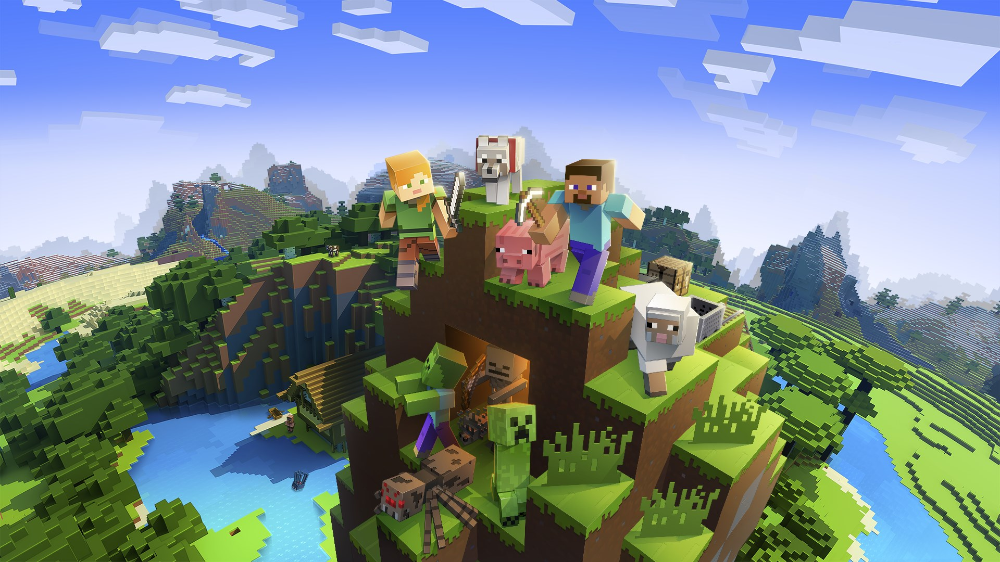
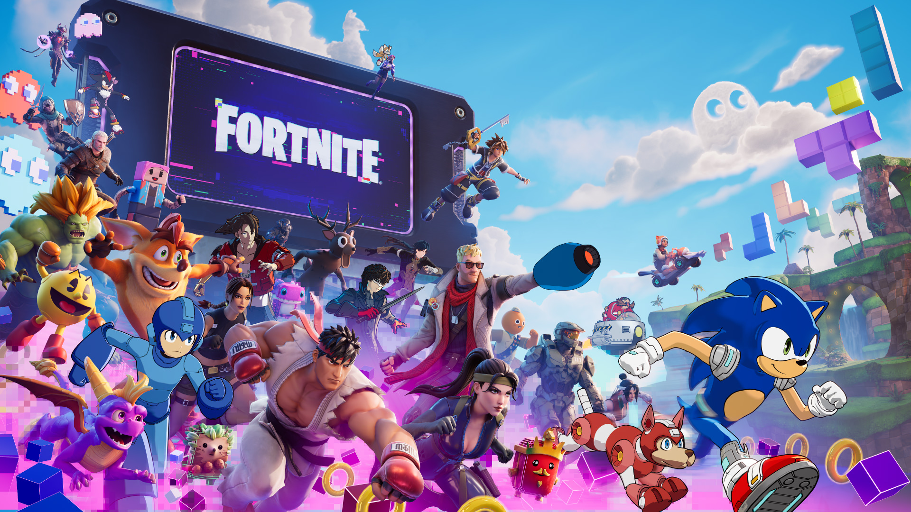

Minecraft

Minecraft es un videojuego de construcción, exploración y supervivencia creado por Markus Persson y desarrollado por Mojang. Fue lanzado oficialmente en 2011.
Su mundo está formado por bloques, que permiten construir casas, ciudades, y otras estructuras. Los jugadores pueden explorar cuevas, conseguir recursos, fabricar herramientas y enfrentarse a diferentes criaturas.
Es uno de los videojuegos más populares del mundo gracias a su libertad creativa y a sus modos individual y multijugador.
Fortnite

Fortnite es un videojuego desarrollado por Epic Games y lanzado en 2017. Se hizo famoso principalmente por su modo Battle Royale.
En este modo, los jugadores compiten en una isla y deben conseguir objetos, armas y recursos para intentar ser el último en quedar en pie. Una de sus características más conocidas es la posibilidad de construir estructuras.
También ofrece eventos especiales, conciertos, colaboraciones con personajes famosos, y otros modos de juego creados por la comunidad.
Roblox

Roblox es una plataforma de videojuegos en línea lanzada en 2006. Permite a sus usuarios jugar experiencias creadas por otras personas y desarrollar sus propios juegos.
Dentro de Roblox existen muchos tipos de experiencias, como aventuras, simuladores, carreras, juegos de terror y combates. Cada experiencia puede tener sus propias reglas.
Su popularidad se debe a la variedad de juegos, las opciones de personalización de los avatares, y la posibilidad de compartir experiencias con amigos por Internet.
Super Mario

Super Mario es una famosa serie de videojuegos creada por Nintendo. Su personaje principal es Mario, un fontanero que vive numerosas aventuras en mundos llenos de obstáculos y enemigos.
En muchos de sus juegos, Mario debe superar niveles, recoger monedas, conseguir poderes y rescatar a la princesa Peach, a menudo cuenta con la ayuda de su hermano Luigi y otros amigos.
Desde su aparición en 1985 con Super Mario Bros., la serie se ha convertido en una de las más reconocidas de la historia de los videojuegos, con títulos de plataformas, carreras y deportes.